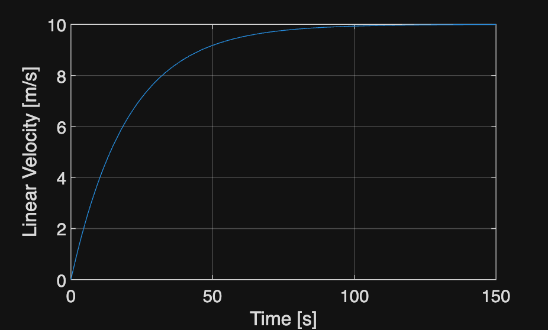
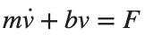
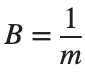
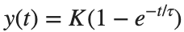

System Modeling · 학습
실행 조건
MATLAB · Control System Toolbox
측정 데이터 step_measurements.csv를 스크립트와 같은 폴더에 둡니다. 파일이 없으면 코드가 내려받습니다.
양수인 Gain과 Time Constant를 구하기 위해 두 매개변수의 로그를 fminsearch로 추정합니다.
이번에 배울 내용
질량이나 저항을 바꿀 때 Transient Response와 Steady-State Value 중 무엇이 변하는지 모델로 판단합니다.
전체 흐름
물리식·단위 → State Space 모델 → 측정 응답 → 계수 추정·잔차
물리식에서 입력과 상태 정하기
Cruise 모델  ,
,

에서 입력은 힘, 상태·출력은 속도입니다.
입니다. 일정한 힘의 최종 속도는 , Time Constant는 입니다.질량을 늘려도 최종 속도는 같지만 속도가 변하는 데 더 오래 걸립니다.
모델이 측정과 맞는지 보기
Unit Step 응답

에서 K는 Steady State 값이고, τ는 그 값의 약 63.2%에 도달하는 시간입니다. 측정한 응답에 이 식을 맞춰 두 매개변수를 추정합니다.이 예제의 처음 3초 기록에는 응답이 계속 증가하는 부분만 담깁니다. 15초 기록을 함께 사용했을 때 추정한 최종값과 Time Constant가 얼마나 달라지는지 비교합니다.
풀이 예제
%% Worked example
m=1000; b=50; force=500;
G=ss(-b/m,1/m,1,0); t=linspace(0,150,1501)';
[v,tm]=step(force*G,t); figure; plot(tm,v);
xlabel('Time [s]'); ylabel('Linear Velocity [m/s]'); grid on
공식 문서·데이터
참고 예제
추가 예제 보기
참고 자료